Differential Carrier Assembly Rear (4WD) Reassembly |
| 1. Install Straight Pin |
Using a plastic hammer, install the 4 straight pins to the rear differential carrier.
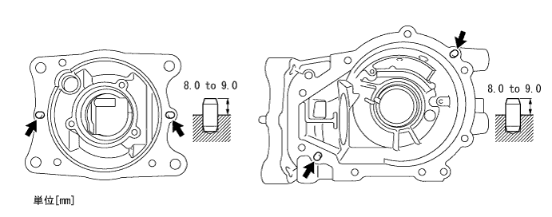
| 2. Install Rear Differential Breather Plug Oil Deflector |
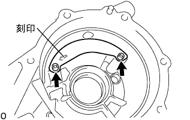 |
Using a socket hexagon wrench 5, install the rear differential breather plug oil deflector with the 2 bolts.
| 3. Install Differential Ring Gear |
Thoroughly clean off any oil and grease from the differential ring gear contact surface of the rear differential case.
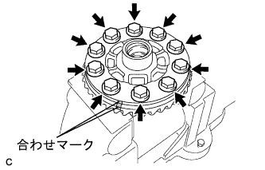 |
Secure the differential case in a vise between aluminum plates.
Align the matchmarks on the rear differential case and differential ring gear, and install the differential ring gear.
Tighten the 10 new rear differential case bolts.
| 4. Install Rear Differential Case Bearing |
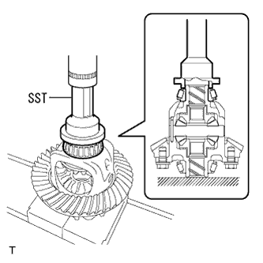 |
Using SST and a press, press the rear differential case bearing RH (inner race) onto the rear differential case.
| 5. Install Rear Differential Case Bearing |
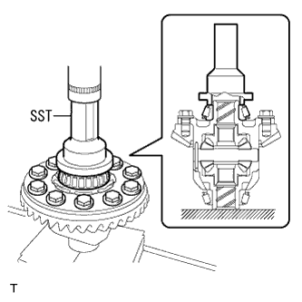 |
Using SST and a press, press the rear differential case bearing LH (inner race) onto the rear differential case.
| 6. Install Rear Differential Case Bearing |
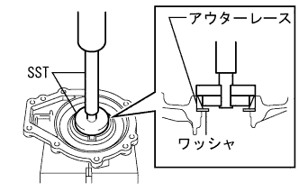 |
Using SST and a press, press the rear differential side gear shaft washer and rear differential case bearing LH (outer race) into the differential side bearing retainer.
| 7. Install Rear Differential Case Bearing |
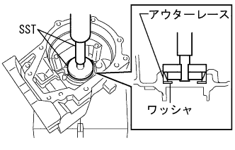 |
Using SST and a press, press the rear differential side gear shaft washer and rear differential case bearing RH (outer race) into the rear differential carrier.
| 8. Install Rear Drive Pinion Tapered Roller Bearing FR |
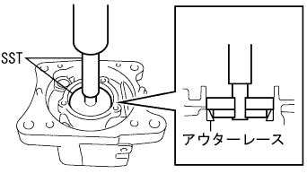 |
Using SST and a press, press the rear drive pinion tapered roller bearing FR (outer race) into the rear differential carrier.
| 9. Install Rear Drive Pinion Tapered Roller Bearing RR |
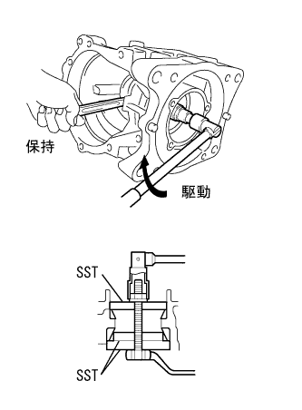 |
Using SST, a bolt, nut and washer, install the rear drive pinion tapered roller bearing RR (outer race) to the rear differential carrier.
| 10. Install Rear Drive Pinion Tapered Roller Bearing RR |
Install the rear differential drive pinion washer to the differential drive pinion.
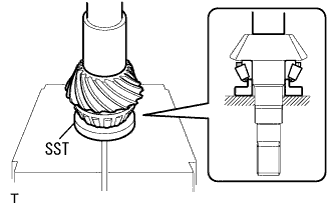 |
Using SST and a press, press the tapered roller bearing RR (inner race) onto the differential drive pinion.
| 11. Adjust Differential Drive Pinion Preload |
Install the differential drive pinion (with rear drive pinion tapered roller bearing RR inner race) to the rear differential carrier.
Install the rear drive pinion tapered roller bearing FR (inner race) and a new rear drive pinion nut to the differential drive pinion.
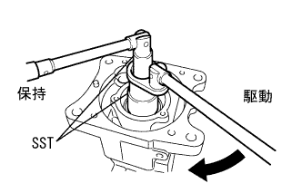 |
Using SST, tighten the new rear drive pinion nut little by little, within the limit, until the specified preload is reached.
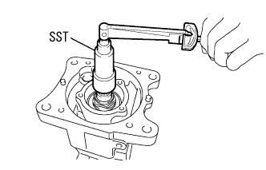 |
Using SST and a torque wrench, measure the turning torque of the differential drive pinion.
| Specifications | Preload [N*m{kgf*cm}] |
|---|---|
| New bearing | 1.31 to 2.18{13 to 22} |
| Reused bearing | 0.24 to 0.37{2 to 4} |
| 12. Install Rear Differential Case Sub-assembly |
 |
Install the rear differential case to the rear differential carrier.
| 13. Install Differential Side Bearing Retainer |
Using a scraper, clean off the seal packing adhering to the differential carrier and differential side bearing retainer, then remove any oil with cleaning solvent.
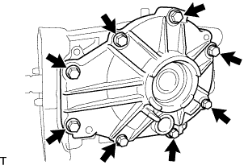 |
Install the differential side bearing retainer to the rear differential carrier with the 8 bolts.
| 14. Adjust Differential Ring Gear Backlash |
 |
Insert a dial indicator through the rear differential filler plug hole and place it at a right angle against the tip of a ring gear tooth.
Using SST, hold the drive pinion.
Using SST, turn the rear differential case forward and backward and measure the backlash.
If the backlash is not as specified, select a rear differential side gear shaft washer from the table and install it.
| Part No. | Thickness [mm] | Identification Mark | Part No. | Thickness [mm] | Identification Mark |
|---|---|---|---|---|---|
| 90564-37022 | 1.59 to 1.61 | A0 | 90564-37040 | 2.13 to 2.15 | B8 |
| 90564-37023 | 1.62 to 1.64 | A1 | 90564-37041 | 2.16 to 2.18 | B9 |
| 90564-37024 | 1.65 to 1.67 | A2 | 90564-37042 | 2.19 to 2.21 | C0 |
| 90564-37025 | 1.68 to 1.70 | A3 | 90564-37043 | 2.22 to 2.24 | C1 |
| 90564-37026 | 1.71 to 1.73 | A4 | 90564-37044 | 2.25 to 2.27 | C2 |
| 90564-37027 | 1.74 to 1.76 | A5 | 90564-37045 | 2.28 to 2.30 | C3 |
| 90564-37028 | 1.77 to 1.79 | A6 | 90564-37046 | 2.31 to 2.33 | C4 |
| 90564-37029 | 1.80 to 1.82 | A7 | 90564-37047 | 2.34 to 2.36 | C5 |
| 90564-37030 | 1.83 to 1.85 | A8 | 90564-37048 | 2.37 to 2.39 | C6 |
| 90564-37031 | 1.86 to 1.88 | A9 | 90564-37049 | 2.40 to 2.42 | C7 |
| 90564-37032 | 1.89 to 1.91 | B0 | 90564-37050 | 2.43 to 2.45 | C8 |
| 90564-37033 | 1.92 to 1.94 | B1 | 90564-37051 | 2.46 to 2.48 | C9 |
| 90564-37034 | 1.95 to 1.97 | B2 | 90564-37052 | 2.49 to 2.51 | D0 |
| 90564-37035 | 1.98 to 2.00 | B3 | 90564-37053 | 2.52 to 2.54 | D1 |
| 90564-37036 | 2.02 to 2.04 | B4 | 90564-37054 | 2.55 to 2.57 | D2 |
| 90564-37037 | 2.04 to 2.06 | B5 | 90564-37055 | 2.58 to 2.60 | D3 |
| 90564-37038 | 2.07 to 2.09 | B6 | 90564-37056 | 2.61 to 2.63 | D4 |
| 90564-37039 | 2.10 to 2.12 | B7 | 90564-37057 | 2.64 to 2.66 | D5 |
| 15. Adjust Differential Ring Gear and Drive Pinion Tooth Contact |
Remove the 8 bolts and the differential side bearing retainer from the rear differential carrier.
Remove the rear differential case.
Apply a thin, even coat of red lead (Prussian blue) to both sides of the differential ring gear teeth.
Install the rear differential case.
Temporarily install the differential side bearing retainer to the differential carrier with the 8 bolts.
Rotate the differential drive pinion several times.
Remove the 8 bolts and the differential side bearing retainer from the rear differential carrier.
Inspect the tooth contact between the differential drive pinion and differential ring gear.
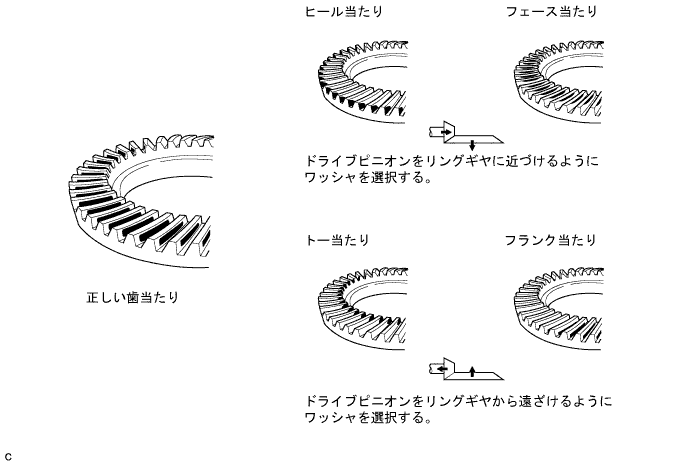
If there is face contact or flank contact, perform the following.
Adjust by moving the ring gear using the rear differential side gear shaft washers.
If there is heel contact or toe contact, perform the following.
Select a rear differential drive pinion washer from the table and adjust by moving the drive pinion.
| Part No. | Thickness [mm] | Identification Mark | Part No. | Thickness [mm] | Identification Mark |
|---|---|---|---|---|---|
| 90564-35041 | 1.695 to 1.705 | 41 | 90564-35071 | 1.955 to 1.965 | 71 |
| 90564-35042 | 1.705 to 1.715 | 42 | 90564-35072 | 1.965 to 1.975 | 72 |
| 90564-35043 | 1.715 to 1.725 | 43 | 90564-35073 | 1.975 to 1.985 | 73 |
| 90564-35044 | 1.725 to 1.735 | 44 | 90564-35074 | 1.985 to 1.995 | 74 |
| 90564-35045 | 1.735 to 1.745 | 45 | 90564-35075 | 1.995 to 2.005 | 75 |
| 90564-35046 | 1.745 to 1.755 | 46 | 90564-35076 | 2.005 to 2.015 | 76 |
| 90564-35047 | 1.755 to 1.765 | 47 | 90564-35077 | 2.015 to 2.025 | 77 |
| 90564-35048 | 1.765 to 1.775 | 48 | 90564-35078 | 2.025 to 2.035 | 78 |
| 90564-35049 | 1.775 to 1.785 | 49 | 90564-35079 | 2.035 to 2.045 | 79 |
| 90564-35050 | 1.785 to 1.795 | 50 | 90564-35080 | 2.045 to 2.055 | 80 |
| 90564-35051 | 1.795 to 1.805 | 51 | 90564-35081 | 2.055 to 2.065 | 81 |
| 90564-35052 | 1.805 to 1.815 | 52 | 90564-35082 | 2.065 to 2.075 | 82 |
| 90564-35053 | 1.815 to 1.825 | 53 | 90564-35083 | 2.075 to 2.085 | 83 |
| 90564-35054 | 1.825 to 1.835 | 54 | 90564-35084 | 2.085 to 2.095 | 84 |
| 90564-35055 | 1.835 to 1.845 | 55 | 90564-35085 | 2.095 to 2.105 | 85 |
| 90564-35056 | 1.845 to 1.855 | 56 | 90564-35086 | 2.105 to 2.115 | 86 |
| 90564-35057 | 1.855 to 1.865 | 57 | 90564-35087 | 2.115 to 2.125 | 87 |
| 90564-35058 | 1.865 to 1.875 | 58 | 90564-35088 | 2.125 to 2.135 | 88 |
| 90564-35059 | 1.875 to 1.885 | 59 | 90564-35089 | 2.135 to 2.145 | 89 |
| 90564-35060 | 1.885 to 1.895 | 60 | 90564-35090 | 2.145 to 2.155 | 90 |
| 90564-35061 | 1.895 to 1.905 | 61 | 90564-35091 | 2.155 to 2.165 | 91 |
| 90564-35062 | 1.905 to 1.915 | 62 | 90564-35092 | 2.165 to 2.175 | 92 |
| 90564-35063 | 1.915 to 1.925 | 63 | 90564-35093 | 2.175 to 2.185 | 93 |
| 90564-35064 | 1.925 to 1.935 | 64 | 90564-35094 | 2.185 to 2.195 | 94 |
| 90564-35065 | 1.935 to 1.945 | 65 | 90564-35095 | 2.195 to 2.205 | 95 |
| 90564-35070 | 1.945 to 1.955 | 70 | - | - | - |
If the tooth contact has been adjusted, perform the backlash inspection, preload inspection and tooth contact inspection again.
| 16. Measure Total Preload |
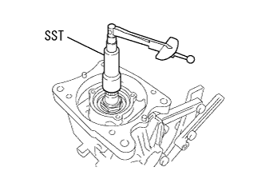 |
Using SST and a torque wrench, measure the turning torque with the teeth of the differential drive pinion and differential ring gear in contact.
| Specifications | Total Preload [N*m{kgf*cm}] |
|---|---|
| New case bearing | Drive pinion preload + 1.18 to 1.90{12 to 19} |
| Reused case bearing | Drive pinion preload + 0.99 to 1.63{10 to 17} |
If the result is not as specified, perform the following.
Reselect and install the RH side gear shaft washer.
Perform the total preload inspection, backlash inspection and tooth contact inspection again.
| 17. Remove Differential Side Bearing Retainer |
Remove the 8 bolts and the differential side bearing retainer from the rear differential carrier.
| 18. Remove Rear Differential Case Sub-assembly |
|
Remove the rear differential case from the rear differential carrier.
| 19. Remove Differential Drive Pinion |
Remove the differential drive pinion from the rear differential carrier.
| 20. Install Rear Differential Drive Pinion Bearing Spacer |
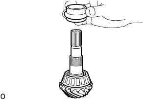 |
Install a new rear differential drive pinion bearing spacer to the differential drive pinion.
| 21. Install Differential Drive Pinion |
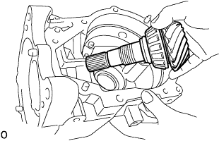 |
Install the differential drive pinion to the rear differential carrier.
| 22. Install Rear Drive Pinion Nut |
Apply hypoid gear oil LSD to the threads of a new rear drive pinion nut.
Using SST, tighten the rear drive pinion nut while checking the specified preload.
| 23. Adjust Differential Drive Pinion Preload |
Using SST and a torque wrench, inspect the turning torque.
| Specifications | Preload [N*m{kgf*cm}] |
|---|---|
| New bearing | 1.31 to 2.18{13 to 22} |
| Reused bearing | 0.24 to 0.37{2 to 4} |
If the preload is insufficient, using SST, retighten the rear drive pinion nut 5 to 10° at a time, measure the turning torque, and repeat the adjustment until it is within the standard.
If the preload is still insufficient after the rear drive pinion nut tightening torque exceeds 245N*m{2500kgf*cm}, loosen the rear drive pinion nut once and check the threads of the rear drive pinion nut and differential drive pinion for damage.
If there is no problem, replace the rear differential drive pinion bearing spacer, apply hypoid gear oil LSD to the threads, then repeat the procedure above.
| 24. Install Rear Differential Case Sub-assembly |
|
Install the rear differential case to the rear differential carrier.
| 25. Install Differential Side Bearing Retainer |
Install the differential side bearing retainer to the rear differential carrier with the 8 bolts.
| 26. Inspect Differential Ring Gear Backlash |
|
Insert a dial indicator through the rear differential carrier cover plug hole, and place it at a right angle to the tip of the ring gear tooth surface.
Using SST, hold the drive pinion.
Using SST, turn the rear differential case forward and in reverse to check the backlash.
| 27. Inspect Total Preload |
Using SST and a torque wrench, measure the turning torque with the teeth of the differential drive pinion and differential ring gear in contact.
| Specifications | Total Preload [N*m{kgf*cm}] |
|---|---|
| New case bearing | Drive pinion preload + 1.18 to 1.90{12 to 19} |
| Reused case bearing | Drive pinion preload + 0.99 to 1.63{10 to 17} |
If the result is not as specified, perform the following.
Reselect and install the RH side gear shaft washer.
Perform the backlash inspection and total preload inspection again.
| 28. Remove Differential Side Bearing Retainer |
Remove the 8 bolts and the side bearing retainer from the rear differential carrier.
| 29. Install Differential Side Bearing Retainer |
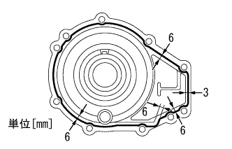 |
Apply seal packing 1281 to the differential side bearing retainer at the positions shown in the illustration.
Install the differential side bearing retainer to the rear differential carrier with the 8 bolts.
| 30. Inspect Total Preload |
Using SST and a torque wrench, inspect the turning torque with the teeth of the differential drive pinion and differential ring gear in contact.
| Specifications | Total Preload [N*m{kgf*cm}] |
|---|---|
| New case bearing | Drive pinion preload + 1.18 to 1.90{12 to 19} |
| Reused case bearing | Drive pinion preload + 0.99 to 1.63{10 to 17} |
| 31. Inspect Differential Ring Gear Backlash |
|
Insert a dial indicator through the rear differential carrier cover plug hole, and place it at a right angle to the tip of the ring gear tooth surface.
Using SST, hold the drive pinion.
Using SST, turn the rear differential case forward and in reverse to check the backlash.
| 32. Install Rear Drive Pinion Nut |
Using a chisel and hammer, stake the rear drive pinion nut.
| 33. Install Diaphragm Oil Seal |
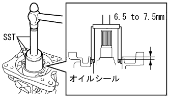 |
Using SST and a hammer, tap a new diaphragm oil seal into the rear differential carrier to the standard depth.
Apply a light coat of MP grease No.2 to the oil seal lip.
| 34. Install Rear Differential Side Gear Shaft Oil Seal |
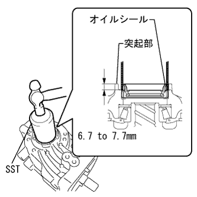 |
Using SST and a hammer, tap the 2 new rear differential side gear shaft oil seals into the differential carrier to the standard depth
Apply a light coat of MP grease No.2 to the oil seal lip.
| 35. Install Transmission Coupling Shim |
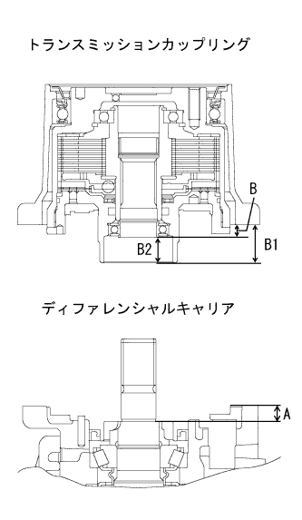 |
Using vernier calipers and a straightedge, measure dimension B1 and dimension B2 of the transmission coupling.
Calculate dimension B from the difference between dimension B1 and dimension B2.
Using vernier calipers and a straightedge, measure dimension A of the differential carrier.
Select a transmission coupling shim based on the difference between dimension A and dimension B, and install it.
| A-B Dimension [mm] | Part No. | Thickness [mm] | Identification Mark |
|---|---|---|---|
| 3.96 to 4.01 | 90564-25024 | 1.98 to 2.02 | 1 |
| 4.26 to 4.31 | 90564-25025 | 2.28 to 2.32 | 2 |
| 4.56 to 4.61 | 90564-25026 | 2.58 to 2.62 | 3 |
| 3.81 to 3.86 | 90564-25027 | 1.83 to 1.87 | 4 |
| 4.11 to 4.16 | 90564-25028 | 2.13 to 2.17 | 5 |
| 4.41 to 4.46 | 90564-25029 | 2.43 to 2.47 | 6 |
| 3.71 to 3.76 | 90564-25031 | 1.73 to 1.77 | 8 |
| 3.76 to 3.81 | 90564-25032 | 1.78 to 1.82 | 9 |
| 3.86 to 3.91 | 90564-25033 | 1.88 to 1.92 | 10 |
| 3.91 to 3.96 | 90564-25034 | 1.93 to 1.97 | 11 |
| 4.01 to 4.06 | 90564-25035 | 2.03 to 2.07 | 12 |
| 4.06 to 4.11 | 90564-25036 | 2.08 to 2.12 | 13 |
| 4.16 to 4.21 | 90564-25037 | 2.18 to 2.22 | 14 |
| 4.21 to 4.26 | 90564-25038 | 2.23 to 2.27 | 15 |
| 4.31 to 4.36 | 90564-25039 | 2.33 to 2.37 | 16 |
| 4.36 to 4.41 | 90564-25040 | 2.38 to 2.42 | 17 |
| 4.46 to 4.51 | 90564-25041 | 2.48 to 2.52 | 18 |
| 4.51 to 4.56 | 90564-25042 | 2.53 to 2.57 | 19 |
| 4.61 to 4.66 | 90564-25043 | 2.63 to 2.67 | 20 |
| 4.66 to 4.71 | 90564-25044 | 2.68 to 2.72 | 21 |
| 36. Install Transmission Coupling Conical Spring Washer |
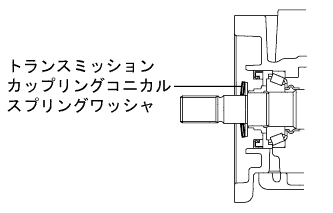 |
Install the transmission coupling conical spring washer to the rear differential carrier.
| 37. Install Transmission Coupling Assembly |
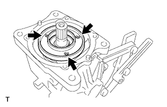 |
Using a socket hexagon wrench 5, install the yoke to the differential carrier assembly with the 3 bolts.
 |
Install a new O-ring to the solenoid.
 |
Install the solenoid to the yoke.
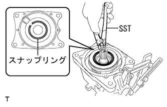 |
Using SST, install a new snap ring.
Using a scraper, clean off the seal packing adhering to the rear differential carrier and transmission coupling assembly, then remove oil with cleaning solvent or equivalent.
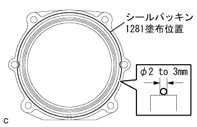 |
Apply seal packing 1281 to the area of the transmission coupling assembly shown in the illustration.
 |
Install the rear differential carrier cover to the rear differential carrier assembly with the 4 bolts.
| 38. Install Rear Differential Carrier Cover Breather Plug |
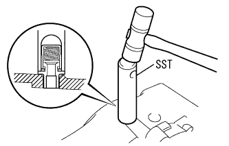 |
Using SST and a plastic hammer, tap a new rear differential carrier cover breather plug into the differential carrier until it contacts.
| 39. Install Rear Differential Carrier Cover Plug |
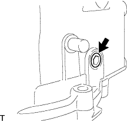 |
Using a socket hexagon wrench 8, install a new rear differential carrier cover plug to the differential carrier.
| 40. Install Rear Differential Filler Plug |
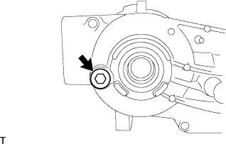 |
Using a socket hexagon wrench 10, install the rear differential filler plug with a new gasket.
| 41. Install Rear Differential Drain Plug |
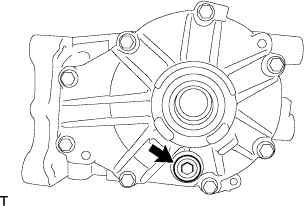 |
Using a socket hexagon wrench 10, install the rear differential drain plug with a new gasket.
| 42. Inspect Transmission Coupling Assembly Runout |
 |
Install a dial indicator with a lever-type probe at a right angle to the inner circumferential surface of the transmission coupling assembly.
Using SST, turn the transmission coupling assembly forward and in reverse to measure its vertical runout.
Install a dial indicator at a right angle to the transmission coupling assembly at the position shown in the illustration.
Using SST, turn the transmission coupling assembly forward and in reverse to measure its lateral runout.
| 43. Install Stud Bolt |
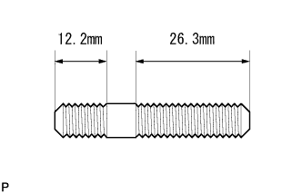 |
Install the 4 stud bolts to the transmission coupling assembly.